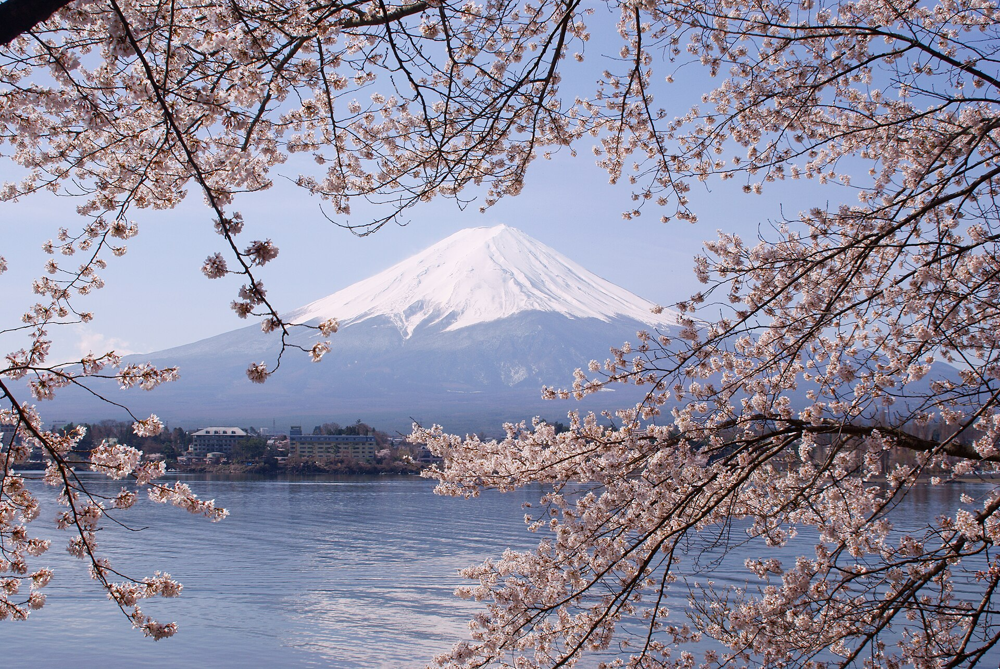

东京
代官山、表参道、涩谷与银座。逛街、建筑、咖啡馆和夜色。
城市漫步一条不把时间塞满的日本秋日路线：东京的街区与灯光、镰仓的海风、河口湖的山景，以及伊豆温泉旅馆里的慢下来。
查看详细执行版：航班・酒店・交通・门票 →
把东京作为稳定的基地，两个日归目的地不换酒店；把最值得住下来的温泉和海岸，留给伊豆。
代官山、表参道、涩谷与银座。逛街、建筑、咖啡馆和夜色。
城市漫步北镰仓 → 小町通 → 长谷 → 江之岛。一日看寺院、老街和海。
海风日归湖畔、大石公园与富士山视野。天气好时，把相机交给山。
富士山日归伊豆高原、大室山、城崎海岸，住两晚温泉旅馆。
海岸与温泉重点不是打卡数量，而是让每天留一点可以随便走走、坐下来喝杯咖啡的余量。
入住新桥／汐留一带，傍晚沿银座、汐留或东京站散步。第一晚不安排远距离移动。
东京入住东京／品川出发，北镰仓看寺院，镰仓站附近吃午饭，下午去长谷与江之岛。傍晚回东京。
寺院 · 老街 · 海岸优先预约富士回游或高速巴士。河口湖站、大石公园、湖畔散步三选二，天气不好就把它换成东京街区日。
天气弹性日上午从东京前往伊豆高原，下午办理入住。把时间留给旅馆、露天风吕和晚餐会席。
换一次酒店上午大室山，下午沿城崎海岸散步。回到伊豆高原找一家设计感咖啡馆，晚上继续泡汤。
自然摄影日返回东京后安排代官山、涩谷、表参道或银座，按体力选择一个片区，不再横跨全城。
逛街 · 咖啡馆 · 酒吧根据航班安排附近早餐和最后采购，不安排远距离景点，把旅行收在一个从容的上午。
返程日城市霓虹、富士山和伊豆群岛，刚好对应这条路线的三种情绪。


这不是固定团表，具体班次与开放情况以出发前官方信息为准。
国庆期间人流较高，提前锁定最容易影响节奏的部分：